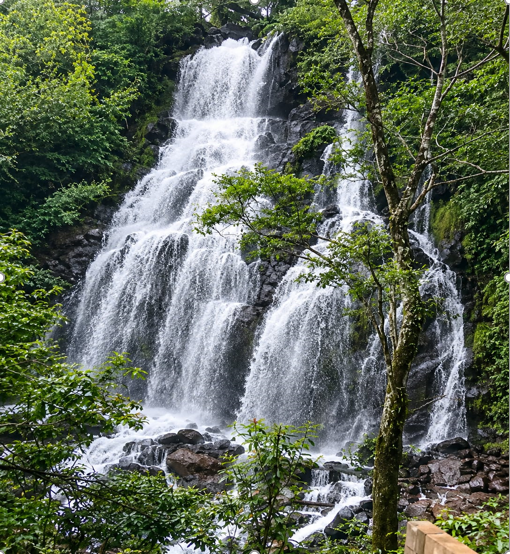

"CASCADA VELO DE NOVIA"

El Parque Velo de Novia es una hermosa reserva natural que alberga una cascada de 35 metros de altura. Si decides andar el sendero cuesta abajo, podrás llegar hasta su desembocadura en el lago de Valle de Bravo.
Cuenta la leyenda que una bella mujer estaba por contraer nupcias, pero él nunca llegó al altar. En un acto de profundo dolor y vergüenza, ella se lanzó por el despeñadero de la cascada. Desde entonces, la localidad comenzó a llamarle Velo de Novia.
"CASCADA PIEDRA DEL MOLINO"

Este conjunto forma un bello atractivo natural, perfecto para disfrutar del sonido que produce la caída del agua sobre las rocas. Se trata de un paraje ideal para disfrutar del aire fresco que producen los pinos y los oyameles, o para caminar por senderos y escalinatas, que te permitirán adentrarte en la vida natural de la región.
La cascada y río El Molino no sólo ofrecen un hermoso paisaje natural, también hallarás las comodidades de un buen hospedaje; pues el lugar cuenta con restaurante, plazas y todos los servicios necesarios para disfrutar tu estancia en Valle de Bravo.
"CASCADA REFUGIO DEL SALTO"

La cascada Refugio del Salto es una de las bellezas naturales más visitadas en Valle de Bravo. Tiene una espectacular caída de agua de aproximadamente 15 metros de altura. Para conocerla deberás hacer un recorrido a pie de 20 minutos, a través del sendero y sobre el río El Molino.